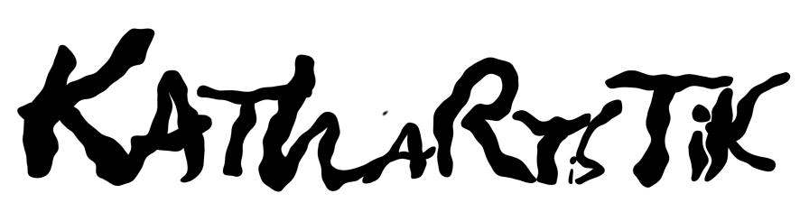

le zine du 9e art
A4 · fermé
A3 · ouvert
A2 · déplié
retourné · p.4–7
glisser : tourner dans tous les sens · pincer ou ⌘ + molette : zoomer
clic sur une page : zoom dessus · clic dans le vide : retour
mentions légales
chargement…
Votre navigateur n'affiche pas la 3D. Voici la couverture du numéro :